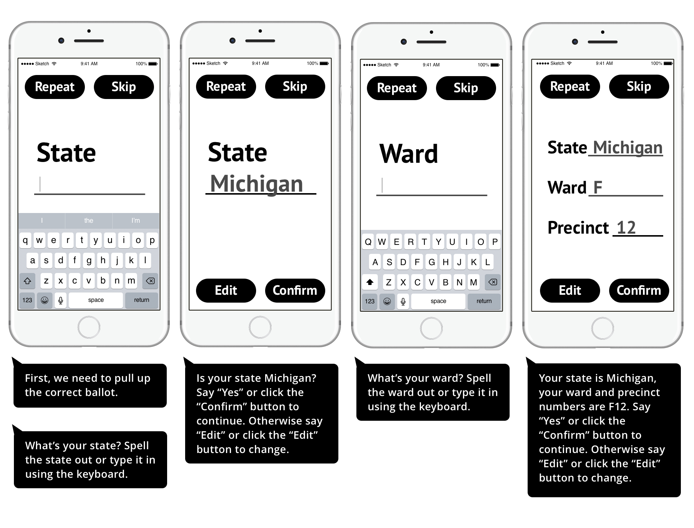

A practical solution incorporating GUI and VI.

Fig. Workflow of using AVA to vote
1. Launch the AVA App
User will request an absentee ballot online following the current process, and get the paper ballot mailed to his/her address. Then user can launch AVA and start to vote.
[Voice Commands]
“Hello! I am your absentee voting assistant! I am here to help you fill out your ballot!”
“If you want me to skip the sentence I’m saying now, please say “SKIP” or hit the Skip button. If you want me to repeat the sentence I just said, please say “REPEAT” or hit the Repeat button.”
2. Input state, ward, and precinct information
User will input state, ward and precinct information by either voice input or keyboard input to pull up the correct ballot template. Ballot template data will be updated by the election committee.

[Voice Commands]
"First, we need to pull up the correct ballot."
"What’s your state? Spell the state out or type it in using the keyboard."
"Is your state Michigan? Say “Yes” or click the “Confirm” button to continue. Otherwise say “Edit” or click the “Edit” button to change. ..."
"Got it! So your state is Michigan, your ward and precinct numbers are F12."
3. Listen to the how-to-vote instructions
AVA will read the how-to-vote instructions, and user can skip the instruction if he/she already know that.
[Voice Commands]
"Pull up the ballot successfully."
"Now, let me read the instructions on the ballot, please say “Skip” or hit Skip button to skip the instructions."
"You can re-listen to the instructions by saying ‘Repeat’ or hitting the Repeat button."
"OK, let’s continue to the voting process."
4. Vote
The ballot will be read section by section, and user can select candidates or write in, and vote proposals by either voice control or touch screen control.
[Voice Commands]
"You are voting for the City General Election, There are 2 votes you need to do based on your precinct."
"election 1: Partisan section, City, Council Member first ward, vote for not more than one. The candidates are: Number one Bayley Stinnette, Number two Mark Green, Number three Nate Tyler, and Number four for a write in. Please tell me the number for which you wish to vote, or type it on the keyboard."
"OK, you chose Number Two, Mark Green. Say “Confirm” to continue. Say “Edit” to change your selection."
5. Confirm and print
After finished all the choices, AVA will read the voting results to user to confirm or edit the choices. And then AVA will ask for permission to connect to the printer. AVA will direct the user to insert the paper ballot in correct direction and start to print.
[Voice Commands]
"Now, I want to confirm your choices. For election 1, partisan section, city, council member first ward, you chose xxx. For election 2, proposal xxx, you chose No. Please say “confirm” to confirm; say “edit” to change your choices."
"Now, let’s print out your choices on the ballot. Before that, can I open the bluetooth and link to your printer?"
"Thank you! Now that the printer is connected, I need to check the orientation of the ballot. Place the ballot in front of you."
(If ballot not completely in the scan) “Please bring the phone higher/lower.”
(If the ballot is flipped) "Your ballot is flipped over. Flip it back to the correct orientation."
"Now, Say “print” or click the “print” button on the center of the screen."
6. Confirm printing result and mail
AVA guides the user to scan the printed ballot and compare the printing results with the voting results to ensure whether the correct candidates are filled in. Then, user can seal the envelope and mail the ballot back.
[Voice Commands]
"First, Please say scan or hit the scan button on the screen to start scan the ballot. Then, hold your phone up over the ballot to let me check the choices you made. Now, follow my instructions. Move the phone a little Higher, higher, lower, forward, backward, backward. OK."
"This is the right side of the ballot, your choice is: For election 1, partisan section, city, council member first ward, you chose Number Two Mark Green. For election 2, proposal Wayne county community public safety preservation millage, you chose No."
"If there are any mistakes, you can call your local clerk to request a new ballot by saying 'clerk'."
Key features:
- Black and white interface. A strong contrast makes it more readable for the visual impaired individuals.
- Large buttons and simple interface. More readable for the visual impaired and easier to operate on the touch screen.
- Both voice and geasture control. User can use touch screen to input private information instead of speak it out. And now many visual impaired have gotton used to touch screen.
- Audio instructions. User can control the audio with the same operations as VoiceOver, the screenreader they are used to. And they can choose to skip or re-listen some instructions by clicking the buttons on the top. Have a look
at our Scripts for the voice instructions.